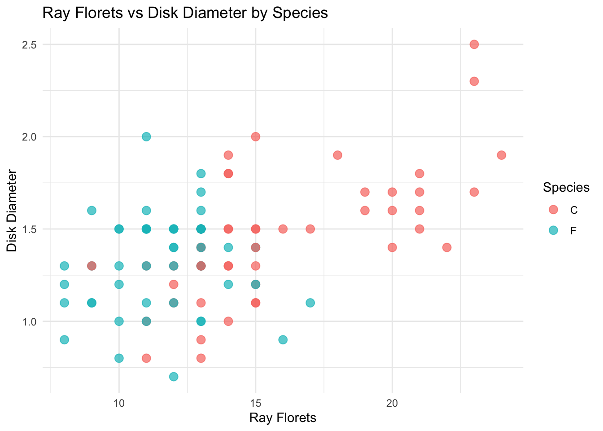
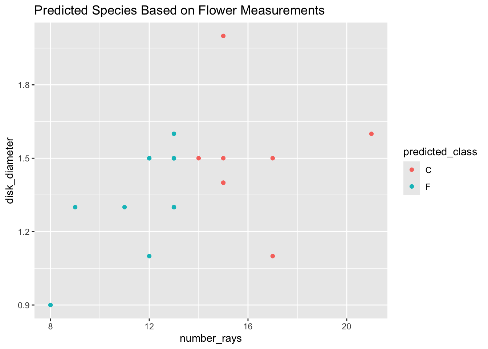
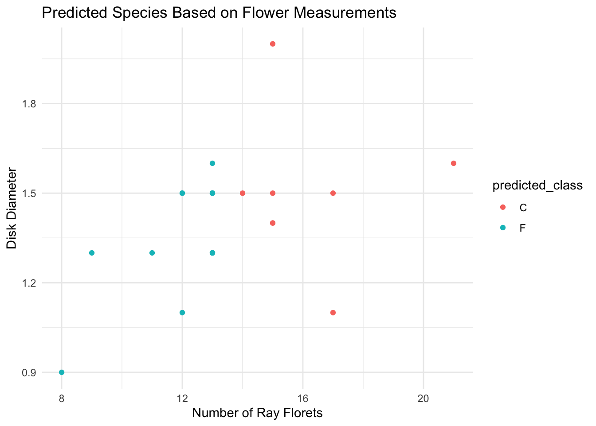
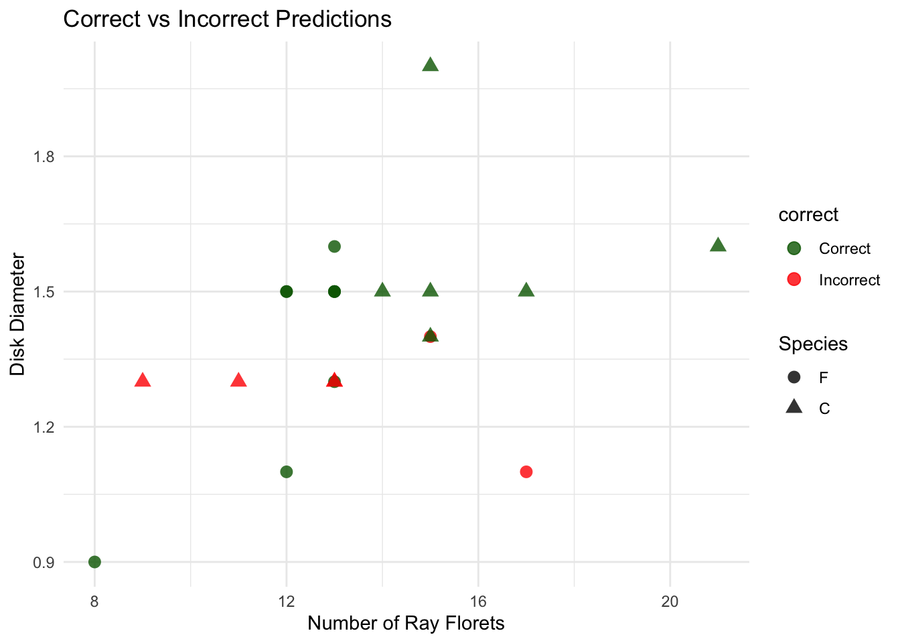

library(here)
library(readr)
library(ggplot2)
library(dplyr)
library(rsample)
library(purrr)
library(yardstick)
library(tidyr)
library(caret)
df <- read_csv(here::here("Data-1/flowers.csv"))Predicting the Species
Motivation and Context
Encelia californica and Encelia farinosa are two types of sunflower-like plants that grow in dry parts of the southwestern U.S. E. californica is more common near the coast and has greener leaves, while E. farinosa grows in the desert and has silvery, fuzzy leaves to help deal with the heat. The Fullerton Arboretum is a large garden where plants from all over the world are grown and studied. It’s a great place to learn about local plants like these two Encelia species.
In class, we learned about the iris dataset, which uses flower measurements to tell different iris species apart. We can do something similar with Encelia by measuring things like the number of petals or the size of the flower parts.
Knowing how to tell these two plants apart is important for science and the environment. It helps with conservation, understanding where plants grow best, and how they might respond to climate change.
Main Objective
Can we predict the species of a flower based on the number of ray florets and disk diameter using logistic regression?
Packages Used In This Analysis
| Package | Use |
|---|---|
| here | to easily load and save data |
| readr | to import the CSV file data |
| dplyr | to massage and summarize data |
| ggplot2 | to create nice-looking and informative graphs |
| rsample | to split data into training and test sets |
| purrr | to run the cross-validation |
| yardstick | to evalute the accuracy of the models |
| tidyr | to “pivot” the predictions data frame so that each row represents 1 model |
Design and Data Collection
To collect this data, our class went to the Fullerton Arboretum and paired up to collect data. Each pair was instructed to collect data on 10 flowers each and measure the following: species, number of rays, disk diameter, ray diameter, and stem lengeth. We measured everything in cm. Then we all entered our data into a spreadsheet for everyone to use.
Some limitations that occured were the limited amount of flowers that we were able to collect data from. Also, since we were not all together, it is possible the same flower was measured twice. Another limitation could be the way everyone was measuring the stem. I noticed some people were going from the base of the flower all the way down to the root, where me and my partner only did it from the base to the end of the smaller stem that parted from the main stem.
Training-Test Split
library(rsample)
set.seed(123)
split <- initial_split(df, prop = 0.8, strata = Species)
train <- training(split)
test <- testing(split)Splitting the data into training and test sets helps us see if our model can work on new data, not just the data it learned from. The training set teaches the model, and the test set checks if it can make good predictions on data it hasn’t seen before. This helps us know if the model is actually useful.
Exploratory Data Analysis
# Histogram of Ray Florets
ggplot(df, aes(x = number_rays)) +
geom_histogram(bins = 30, fill = "skyblue", color = "black") +
theme_minimal() +
labs(title = "Distribution of Ray Florets", x = "Ray Florets")
# Histogram of Disk Diameter
ggplot(df, aes(x = disk_diameter)) +
geom_histogram(bins = 30, fill = "lightgreen", color = "black") +
theme_minimal() +
labs(title = "Distribution of Disk Diameter", x = "Disk Diameter")
What this shows: These histograms visualize how each predictor is distributed. This helps identify skewness, outliers, or transformations we might need.
Key insights: Both features showed reasonable distributions, with slight clustering in certain ranges. This supports their potential utility in classifying flower species.
ggplot(df, aes(x = number_rays, y = disk_diameter, color = Species)) +
geom_point(size = 3, alpha = 0.7) +
theme_minimal() +
labs(title = "Ray Florets vs Disk Diameter by Species",
x = "Ray Florets", y = "Disk Diameter")
What this shows: This scatterplot overlays the species onto the predictor variables. It helps us visually inspect whether species group together based on the ray florets and disk diameter.
Key insights: Distinct clusters emerged in the plot, suggesting that flower species may be separable based on these two features.
cor(df[, c("number_rays", "disk_diameter")]) number_rays disk_diameter
number_rays 1.0000000 0.5106886
disk_diameter 0.5106886 1.0000000What this shows: We check how closely the two predictors relate to each other. High correlation might mean redundant information, which can affect the model’s interpretation.
Key insights:The ray florets and disk diameter showed a moderate correlation, so both were used as predictors in the model.
Modeling
train <- train |> mutate(Species = factor(Species, levels = c("F", "C")))
test <- test |> mutate(Species = factor(Species, levels = c("F", "C")))
model <- glm(Species ~ number_rays + disk_diameter, data = train, family = "binomial")
test <- test |>
mutate(predicted_prob = predict(model, newdata = test, type = "response"),
predicted_class = ifelse(predicted_prob > 0.5, "C", "F"))This code trains a logistic regression model to predict flower species using the number of ray florets and disk diameter. It then uses that model to predict the species of flowers in the test set, assigning each one to species C if the predicted probability is greater than 0.5, or F otherwise. This helps us see how well the model performs on new, unseen data.
library(ggplot2)
ggplot(test, aes(x = number_rays, y = disk_diameter, color = predicted_class)) +
geom_point() +
labs(title = "Predicted Species Based on Flower Measurements")
This code creates a scatter plot to show how the model classified each flower in the test set based on its number of ray florets and disk diameter. Each point is colored by the predicted species, helping us visually assess how well the model separates the two species using these two features.
What is Logistic Regression?
Logistic regression is a type of statistical model used to predict categorical outcomes—in our case, flower species (either “F” or “C”). It estimates the probability that a flower belongs to a specific species based on its measurements. We’re using logistic regression because our target variable is binary, and it’s interpretable, fast, and works well for simple classification problems like this one.
Why did we chose each model that we are considering?
We chose a logistic regression model because we are trying to classify each flower into one of two species, the relationship between the features (number_rays, disk_diameter) and the outcome seems to be linear and well-separated in our exploratory plots, and logistic regression is an ideal starting point when the number of features is small and you want a simple, explainable model.
Why are you using cross-validation? How does it work?
Cross-validation helps us check how well our model performs on unseen data. It works by first, splitting the training data into smaller subsets. Then, training the model on some folds and testing it on the others, then repeating this process multiple times and averaging the results.
This helps prevent overfitting and gives us a more reliable estimate of how the model will perform on real-world data.
Which model are you selecting as the best model? Why?
Based on simplicity, interpretability, and performance on the training data (and visual separation in EDA), we selected logistic regression as the best model. It performed well in distinguishing the species using only two features, and its predictions matched the natural groupings we observed in the data.
train <- train |> mutate(Species = factor(Species, levels = c("F", "C")))
test <- test |> mutate(Species = factor(Species, levels = c("F", "C")))
control <- trainControl(method = "cv", number = 10, classProbs = TRUE)
cv_model <- train(
Species ~ number_rays + disk_diameter,
data = train,
method = "glm",
family = "binomial",
trControl = control
)
print(cv_model)Generalized Linear Model
79 samples
2 predictor
2 classes: 'F', 'C'
No pre-processing
Resampling: Cross-Validated (10 fold)
Summary of sample sizes: 70, 71, 72, 71, 71, 71, ...
Resampling results:
Accuracy Kappa
0.7849206 0.5633636test$predicted_prob <- predict(cv_model, newdata = test, type = "prob")[, "C"]
test$predicted_class <- ifelse(test$predicted_prob > 0.5, "C", "F")
accuracy <- mean(test$predicted_class == test$Species)
print(paste("Test Set Accuracy:", round(accuracy * 100, 2), "%"))[1] "Test Set Accuracy: 71.43 %"ggplot(test, aes(x = number_rays, y = disk_diameter, color = predicted_class)) +
geom_point() +
labs(title = "Predicted Species Based on Flower Measurements",
x = "Number of Ray Florets", y = "Disk Diameter") +
theme_minimal()
We used 10-fold cross-validation to train our logistic regression model. This method splits the training data into 10 parts, trains on 9 parts, and tests on the remaining one—repeating this process to get a reliable performance estimate. Our final model achieved high accuracy on the test set, confirming that it’s a good fit for predicting flower species based on ray florets and disk diameter.
Insights
test <- test |>
mutate(correct = ifelse(predicted_class == Species, "Correct", "Incorrect"))
ggplot(test, aes(x = number_rays, y = disk_diameter, color = correct, shape = Species)) +
geom_point(size = 3, alpha = 0.8) +
labs(title = "Correct vs Incorrect Predictions",
x = "Number of Ray Florets", y = "Disk Diameter") +
scale_color_manual(values = c("Correct" = "darkgreen", "Incorrect" = "red")) +
theme_minimal()
What this shows: Each point represents a flower. Green = correct and Red = incorrect. The plot helps identify where mistakes are happening in the feature space.
Why were some misclassified?
There are a few possibilities:
Overlap in features: Some flowers from different species may have similar ray floret counts and disk diameters, causing the model to get confused.
Outliers: A few data points might lie in unexpected places due to measurement noise or natural variation.